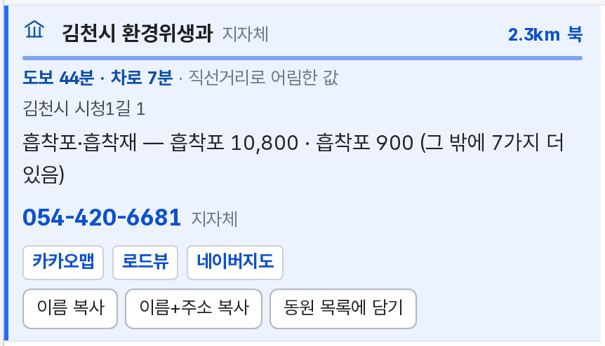
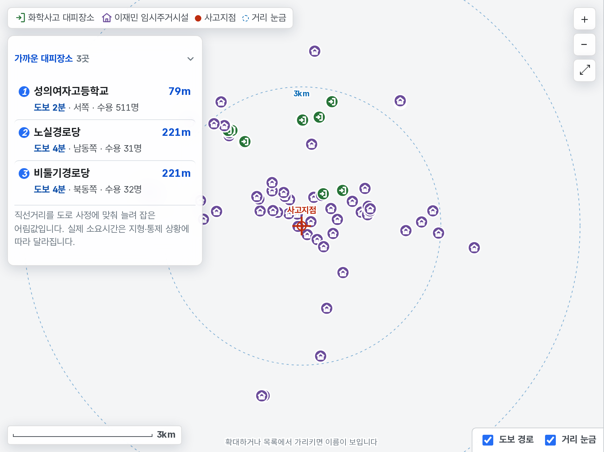
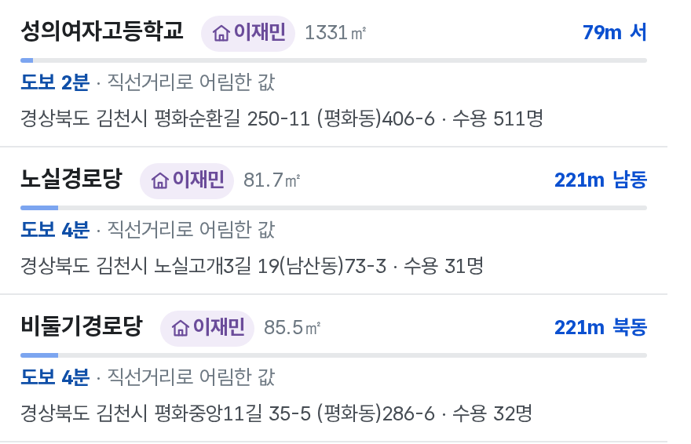
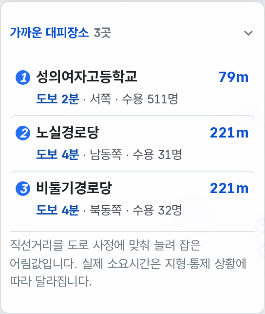
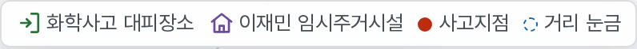
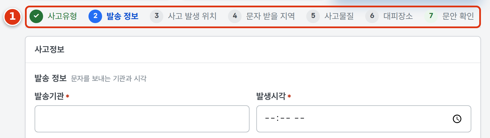

기후에너지환경부 화학물질안전원 · 지자체 담당자용
화학사고 초동대응 지원 서비스
사고가 나면 이 세 가지를 여기서 찾습니다
주소
chem-safety-kr.pages.dev
설치 · 회원가입 없음

01방제 물품·장비 찾기
폐기물을 맡길 업체와
흡착포·보호복·굴착기 같은 물품을
사고지점에서 가까운 순으로 찾습니다.
02주민 대피장소 찾기
사고지점 주변 대피장소를 거리·도보시간·수용인원과 함께
지도와 목록으로 봅니다.
03주민대피 문자생성기
사고 정보를 넣으면 재난문자 표준문안이 만들어집니다.
복사해서 발송시스템에 붙입니다.
개선 의견 · 오류 신고를 받습니다
기후에너지환경부 화학물질안전원
김재훈 전문위원
kjh221@korea.kr
·
온메일 rlawogns@mail.go.kr
01
방제 물품·장비 찾기
업체 1,717건 ·
물품 4,075건
- 업체 섭외 — 폐기물을 맡길 곳을 허가 갈래 7가지로 찾습니다.
수집·운반 · 중간처분 · 종합재활용 · 최종처분(매립) ·
중장비 · 독성가스 · 폐수 수탁처리
- 방제물품 찾기 — 흡착포 · 보호복 · 호흡보호구 · 굴착기 같은
물품 27가지 중에서 고르면
고른 것을 가진 곳만 나옵니다.
- 줄을 누르면 전화번호 · 보유 물품 · 수량이 창으로 열리고,
여러 곳을 동원 목록에 담아 한 번에 복사할 수 있습니다.
 걸음 1 ① 맡길 곳을 부를 때는 업체 섭외,
② 물건을 찾을 때는 방제물품 찾기.
걸음 1 ① 맡길 곳을 부를 때는 업체 섭외,
② 물건을 찾을 때는 방제물품 찾기.

목록 한 줄 — 거리 · 시간 · 물품 · 수량 · 전화번호.
 세부사항 창 — 전화번호와 보유 물품·수량.
세부사항 창 — 전화번호와 보유 물품·수량.
02
주민 대피장소 찾기
대피장소 1,849곳 ·
임시주거시설 15,905곳
- 사고지점을 주소 · 장소 검색,
지도에서 찍기, 내 위치,
위도·경도 넷 중 아무 것으로나 넣습니다.
- 주변 대피장소가 가까운 순으로 나오고, 각 줄에
직선거리 · 도보시간 · 차량시간 ·
수용인원 · 관할부서 전화가 적힙니다.
- 반경 1 · 2 · 5km 안에 몇 곳인지 한 줄로 보고,
고른 곳까지 도로 경로를 그려 봅니다.
- 화학사고 대피장소와 이재민 임시주거시설 두 층을
각각 켜고 끌 수 있습니다.
 사고지점 넣기 ① 주소·장소로 검색, ② 지도에서 찍기,
③ 현장에서는 내 위치.
사고지점 넣기 ① 주소·장소로 검색, ② 지도에서 찍기,
③ 현장에서는 내 위치.

사고지점(빨강)과 주변 대피장소가 지도에 함께 찍힙니다.
왼쪽 위 범례가 표시의 뜻입니다.

목록은 가까운 순입니다. 줄을 누르면 지도가 그곳으로
움직이고 관할부서 번호로 바로 전화할 수 있습니다.

가까운 3곳은 지도 위에 늘 떠 있습니다.
목록을 훑지 않아도 바로 보입니다.

초록 비상구는 화학사고 대피장소,
보라 집은 이재민 임시주거시설입니다.
목록 줄에도 어느 자료인지 딱지가 붙습니다.
03
주민대피 문자생성기
표준문안 12건 ·
실제 발송사례 42건
- 발송 구분 세 가지 중에서 고릅니다 —
실내대피 알림 · 도로 우회 알림 ·
주민소산(대피명령).
- 한 화면에 한 묶음만 묻습니다. 진행 표시를 눌러
아는 값부터 채울 수 있습니다.
- 채우면 표준문안이 만들어지고 글자수가 함께 나옵니다.
복사를 눌러 재난문자 발송시스템에 붙입니다.
- 같은 화면에서 상황종료 문안까지 만들어집니다.
사고 정보를 다시 넣지 않습니다.
 발송 구분 ① 집 안에 머무르게 할 때, ② 차량을
돌릴 때, ③ 대피소로 보낼 때.
발송 구분 ① 집 안에 머무르게 할 때, ② 차량을
돌릴 때, ③ 대피소로 보낼 때.

한 걸음에 한 묶음만 — 위쪽 걸음 표시를 눌러
아무 걸음으로나 건너뜁니다.
 만들어진 문안 ① 승인받은 표준문안 그대로이고,
왼쪽 아래에 글자수(87/90자)가 나옵니다.
② 복사를 누르면 문안 전체가 복사됩니다.
만들어진 문안 ① 승인받은 표준문안 그대로이고,
왼쪽 아래에 글자수(87/90자)가 나옵니다.
② 복사를 누르면 문안 전체가 복사됩니다.